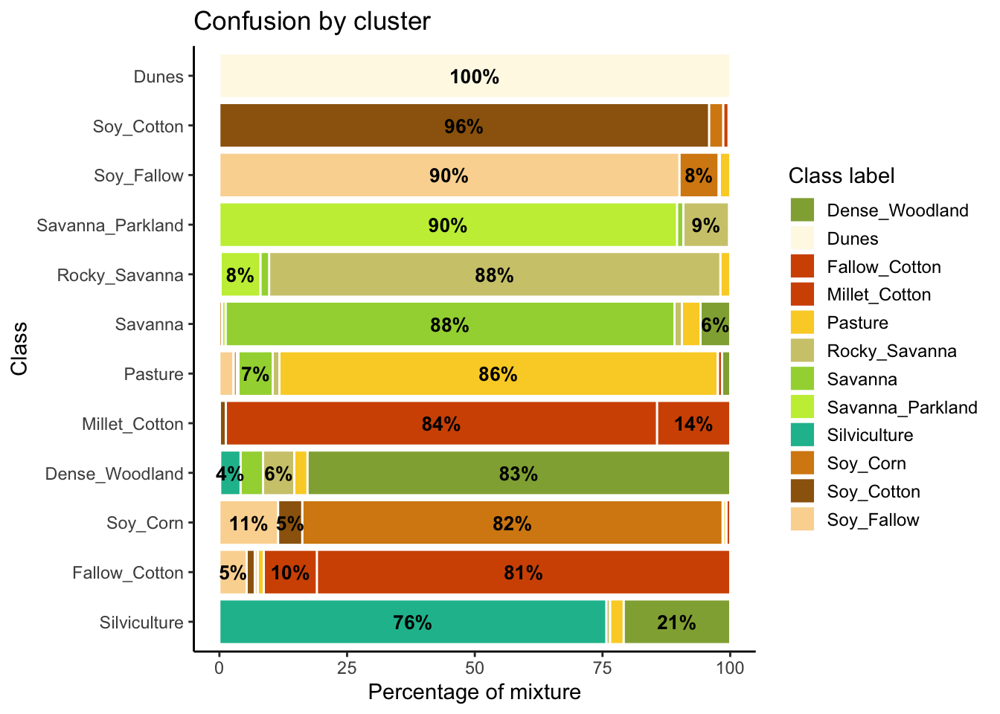

12 Reducing sample imbalance
Configurations to run this chapter
12.1 Introduction
Many training samples for Earth observation data analysis are imbalanced. This situation arises when the distribution of samples associated with each label is uneven. Sample imbalance is an undesirable property of a training set since machine learning algorithms tend to be more accurate for classes with many samples. The instances belonging to the minority group are misclassified more often than those belonging to the majority group. Thus, reducing sample imbalance can positively affect classification accuracy [1].
12.2 Dataset using in this chapter
The examples of this chapter use samples_cerrado_mod13q1, a set of time series from the Cerrado region of Brazil. The data ranges from 2000 to 2017 and includes 50,160 samples divided into 12 classes (Dense_Woodland, Dunes, Fallow_Cotton, Millet_Cotton, Pasture, Rocky_Savanna, Savanna, Savanna_Parkland, Silviculture, Soy_Corn, Soy_Cotton, and Soy_Fallow). Each time series covers 12 months (23 data points) from MOD13Q1 product, and has 4 bands (EVI, NDVI, MIR, and NIR). We use bands NDVI and EVI for faster processing.
# Take only the NDVI and EVI bands
samples_cerrado_mod13q1_2bands <- sits_select(
data = samples_cerrado_mod13q1,
bands = c("NDVI", "EVI"))
# Show the summary of the samples
summary(samples_cerrado_mod13q1_2bands)# A tibble: 12 × 3
label count prop
<chr> <int> <dbl>
1 Dense_Woodland 9966 0.199
2 Dunes 550 0.0110
3 Fallow_Cotton 630 0.0126
4 Millet_Cotton 316 0.00630
5 Pasture 7206 0.144
6 Rocky_Savanna 8005 0.160
7 Savanna 9172 0.183
8 Savanna_Parkland 2699 0.0538
9 Silviculture 423 0.00843
10 Soy_Corn 4971 0.0991
11 Soy_Cotton 4124 0.0822
12 Soy_Fallow 2098 0.0418 The Cerrado dataset is highly imbalanced. The three most frequent labels (Dense Woodland, Savanna, and Pasture) include 53% of all samples, while the three least frequent labels (Millet-Cotton, Silviculture, and Dunes) comprise only 2.5% of the dataset. This is a good dataset to investigate the impact of rebalancing.
12.3 Producing a balanced training set
The function sits_reduce_imbalance() deals with training set imbalance; it increases the number of samples of least frequent labels, and reduces the number of samples of most frequent labels. Oversampling requires generating synthetic samples. The package uses the SMOTE method that estimates new samples by considering the cluster formed by the nearest neighbors of each minority label. SMOTE takes two samples from this cluster and produces a new one by randomly interpolating them [2].
To perform undersampling, sits_reduce_imbalance() builds a SOM map for each majority label based on the required number of samples to be selected. Each dimension of the SOM is set to ceiling(sqrt(new_number_samples/4)) to allow a reasonable number of neurons to group similar samples. After calculating the SOM map, the algorithm extracts four samples per neuron to generate a reduced set of samples that approximates the variation of the original one.
The sits_reduce_imbalance() algorithm has two parameters: n_samples_over and n_samples_under. The first parameter indicates the minimum number of samples per class. All classes with samples less than its value are oversampled. The second parameter controls the maximum number of samples per class; all classes with more samples than its value are undersampled. The following example uses sits_reduce_imbalance() with the Cerrado samples used in the previous chapter. We generate a balanced dataset where all classes have a minimum of 1000 and and a maximum of 1500 samples.
# Reducing imbalances in the Cerrado dataset
balanced_samples <- sits_reduce_imbalance(
samples = samples_cerrado_mod13q1_2bands,
n_samples_over = 1000,
n_samples_under = 1500,
multicores = 4)# Show summary of balanced samples
# Some classes have more than 1500 samples due to the SOM map
# Each label has between 10% and 6% of the full set
summary(balanced_samples)# A tibble: 12 × 3
label count prop
<chr> <int> <dbl>
1 Dense_Woodland 1596 0.0974
2 Dunes 1000 0.0610
3 Fallow_Cotton 1000 0.0610
4 Millet_Cotton 1000 0.0610
5 Pasture 1592 0.0971
6 Rocky_Savanna 1476 0.0901
7 Savanna 1600 0.0976
8 Savanna_Parkland 1564 0.0954
9 Silviculture 1000 0.0610
10 Soy_Corn 1588 0.0969
11 Soy_Cotton 1568 0.0957
12 Soy_Fallow 1404 0.0857To assess the impact of reducing imbalance, we use the SOM cluster technique described in the previous chapter. In synthesis, SOM builds clusters out of the training data. Ideally, each cluster would be composed by a samples of a single class. Mixed clusters indicate possible confusion between samples of different classes. We fist build a SOM using sits_som_map() and then assess the results with sits_som_evaluate_clusters().
# Clustering time series using SOM
som_cluster_bal <- sits_som_map(
data = balanced_samples,
grid_xdim = 15,
grid_ydim = 15,
alpha = 1.0,
distance = "dtw",
rlen = 20,
mode = "pbatch")# Produce a tibble with a summary of the mixed labels
som_eval <- sits_som_evaluate_cluster(som_cluster_bal)Warning: Removed 38 rows containing missing values or values outside the scale range
(`geom_text()`).
As shown in Figure 12.1, the balanced dataset shows less confusion per label than the unbalanced one. In this case, many classes that were confused with others in the original confusion map are now better represented. Reducing sample imbalance should be tried as an alternative to reducing the number of samples of the classes using SOM. In general, users should balance their training data for better performance.
12.4 Summary
Reducing imbalance is an important method to improve quality of training data. As a general rule, users should work with balanced sets, since experiments with sits show an improvement of classification accuracy in almost all cases.